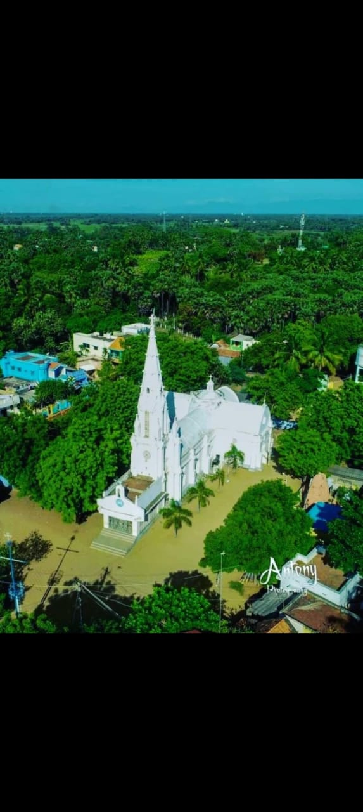
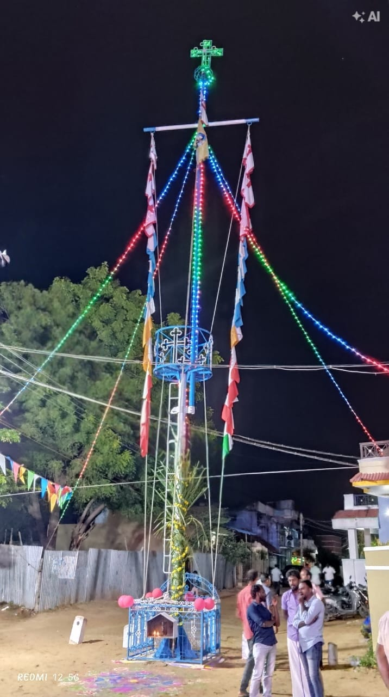

புனித சவேரியார் ஆலயம்
சேதுக்குவாய்த்தான் – 628 207
சேதுக்குவாய்த்தான் – 628 207

பங்கின் பெயர்: புனித சவேரியார் ஆலயம் (St. Xavier's Church)
பாதுகாவலர்: புனித சவேரியார்
முகவரி: சேதுக்குவாய்த்தான் – 628 207 (குரும்பூர் வழி)
பாதுகாவலர் திருவிழா: டிசம்பர் 3-ம் தேதி

1909-ம் ஆண்டு இரண்டாவது முறை பிரகாசபுரம் பங்கு உருவாக்கப்பட்டது. 1914-ம் ஆண்டு வெளியான இனம் சார்ந்த பட்டியலில் சேதுக்குவாய்க்கால் (சேதுக்குவாய்த்தான்) விளங்குகிறது.
இவ்வூரிலிருந்த புனித யாகப்பர் கோயில் 1746-ல் அருட்திரு. ஜோசப் கிரேனிங் என்பவர் கட்டினார். தற்போது புனித சவேரியார் பேரால் கட்டப்பட்டுள்ள பங்கு கோயில் 1914-ல் வெளியான மதுரை மிஷன் வரலாற்று ஏட்டில் "புதுக்கோயில்" என்று குறிப்பிடப்பட்டுள்ளது.
இத்தாலியிலிருந்து கடல் வழியாக கப்பலில் கொண்டு வரப்பட்ட மூன்று மணிகளில் ஒன்று நமது ஊரில் நிறுவப்பட்டது. பல தலைமுறைகளாக அந்த மணி ஒலி நமது ஊரின் ஆன்மிக வாழ்க்கையுடன் இணைந்து இருந்து வருகிறது.

நம் ஊரின் திருவிழா பழைமையான பாரம்பரியத்தையும், மக்களின் இறைநம்பிக்கையையும் எடுத்துக்காட்டும் முக்கியமான விழாவாகும்.
முற்காலத்தில் டிசம்பர் 3-ஆம் தேதி நமது ஊர் திருவிழா கொண்டாடப்பட்டதாக நமது முன்னோர்களால் சொல்லப்பட்டு வருகிறது. பின்னர் ஒரு காலகட்டத்தில் பரவிய கொடிய நோய் காரணமாக, திருவிழா நடைபெறும் தேதி மாற்றப்பட்டதாகக் கூறப்படுகிறது.
அதன் பின்னர், நம் ஊரின் திருவிழா தை மாதத்தின் முதல் வெள்ளிக்கிழமை கொடியேற்றத்துடன் தொடங்கி, தொடர்ந்து சிறப்பாக நடைபெற்று வருகிறது। திருவிழாவின் 9ஆம் திருவிழா நாளில் திருத்தேர் விழாவும், 10ஆம் திருவிழா நாளில் பெருவிழாவும் சிறப்பாகக் கொண்டாடப்படுகின்றன.
முன்பு நமது ஊரில் செப்டம்பர் மாதத்தில் ஆசனம் நடைபெற்று வந்தது. பின்னர், அருட்திரு. Rainald J. Missier அவர்களின் காலத்தில், ஆசனம் ஜனவரி மாதத்திற்கு மாற்றப்பட்டது.
9ஆம் திருவிழா – தேர் திருவிழா: ஜனவரி மாதத்தின் கடைசி சனிக்கிழமை இரவு, நம் ஊரின் புனிதரின் திருத்தேர் சிறப்பாக அலங்கரிக்கப்பட்டு, பக்தர்களின் பங்கேற்புடன் ஊர்வலமாக எடுத்துச் செல்லப்படுகிறது.
10ஆம் திருவிழா – திருவிழா நாள்: அடுத்த நாள் ஞாயிற்றுக்கிழமை திருவிழா சிறப்பாகக் கொண்டாடப்படுகிறது. திருப்பலி மற்றும் சிறப்பு வழிபாடுகள் நடைபெற்று, மக்கள் ஒன்றுகூடி இறை அருளைப் பெறுகின்றனர்.
மறுநாள் – பொது அசனம்: திருவிழாவைத் தொடர்ந்து வரும் திங்கட்கிழமை பொது அசனம் நடைபெறும். ஊர் மக்கள் ஒன்றுகூடி பங்கேற்கும் இந்த நிகழ்வு, நம் ஊரின் ஒற்றுமையையும் பாரம்பரியத்தையும் வெளிப்படுத்துகிறது.
"புனித சவேரியாரே, எங்களுக்காக வேண்டிக்கொள்ளும்." 🙏
🍽️ காலை உணவு: 10ஆம் திருவிழா நாள்
🤝 பொது அசனம்: அடுத்த நாள்
நமது ஊரில் புனித சவேரியார் திருவிழா 1921-ஆம் ஆண்டு முதல் கொண்டாடப்பட்டு வருவதாகக் கூறப்படுகிறது. இதன் அடிப்படையில், 1921 முதல் கணக்கிடும்போது 2021-ஆம் ஆண்டு புனித சவேரியார் திருவிழாவின் 100-வது ஆண்டு நிறைவடைந்தது என்று கூறப்படுகிறது. ஆனால் அதற்கு எந்த ஆதாரமும் இல்லை.
அதேவேளை, நமது கோவில் வரலாற்றின்படி, 1746-ஆம் ஆண்டு அருட்திரு. ஜோசப் கிரேனிங் அவர்களால் பழைய ஆலயம் கட்டப்பட்டது. எனவே, அந்தக் காலத்திலேயே இப்பகுதியில் புனித யாகப்பர் திருவிழா அல்லது ஆலயத் திருவிழா கொண்டாடப்பட்டிருக்கலாம் என்று கருதப்படுகிறது.
மேலும், நமது ஊரில் சுமார் 300 ஆண்டுகளுக்கு முன்பே திருவிழா கொண்டாடப்பட்டிருக்கலாம் என்றும் வாய்மொழி வரலாற்றில் கூறப்படுகிறது.
நமது கோவில் கதவுகள் வெள்ளத்தில் அடித்து வரப்பட்ட மரங்களைப் பயன்படுத்தி செய்யப்பட்டவை என்று கூறப்படுகிறது. இந்த கதவுகள் நமது ஊரின் வரலாற்றின் சாட்சி ஆகும்.

நமது ஊரில் உள்ள கொடிமரம் 2000 ஆம் ஆண்டு நிறுவப்பட்டது। அப்போது பங்குத்தந்தையாக இருந்த அருட்திரு. A. Remigius S. Leon அவர்களின் காலத்தில் இக்கொடிமரம் அமைக்கப்பட்டது.
இதற்கு முன்பு, ஒரு கம்பையே கொடிமரமாகப் பயன்படுத்தி வந்தனர். பின்னர் 2000 ஆம் ஆண்டு புதிய கொடிமரம் நிறுவப்பட்டது.
முன்பு நமது ஊரில் கொடிமரம், புனித அந்தோணியார் கெபி அருகில் அமைந்திருந்தது। தை மாதத்தின் முதல் வெள்ளிக்கிழமை கொடியேற்றம் நடைபெறும்.

புனித சவேரியார் பிறந்த 500வது ஆண்டு விழாவை நினைவுகூரும் வகையில் இந்தக் கலை அரங்கம் அமைக்கப்பட்டது. அப்போது பங்குத்தந்தையாக அருட்திரு. இருதயராஜ் அவர்கள் பணியாற்றினார். 28 ஜனவரி 2007 அன்று திறந்து வைக்கப்பட்டது.
நமது பங்கில் மூன்று முக்கியமான கெபிக்கள் (ஜெபத் தலங்கள்) உள்ளன, இறைமக்கள் ஜெபம் செய்தும் வேண்டுதல்களை சமர்ப்பிக்கும் புனிதமான இடங்கள்.

தொடங்கிய ஆண்டு: 2026
பணிக்காலம்: அருட்திரு. Paul Roman S.
நமது பங்கின் பிரதான கெபி ஆவது. புனித சூசையப்பர் நமது பாதுகாவலர் ஆவார்.

தொடங்கிய ஆண்டு: 1989
பணிக்காலம்: அருட்திரு. M.S. அந்தோணி
புனித அந்தோணியார் நமது வழிகாட்டி ஆவார். பல்வேறு நோக்கங்களுக்கு இறைமக்கள் இங்கு வந்து ஜெபிக்கின்றனர்.

பூஜனை இடம்: அன்னை மரியாவை சிறப்பிக்கும் ஜெபத் தலம்
இறைமக்கள் இங்கு வந்து ஜெபித்து, குடும்ப நலன் மற்றும் பல்வேறு வேண்டுதல்களை இறைவனிடம் சமர்ப்பிக்கின்றனர்.
லூர்து மாதா நமது பாதுகாவலி ஆவார்.
நமது சேதுக்குவாய்த்தான் ஊரின் ஆன்மிக மற்றும் சமூக வளர்ச்சியில் பல்வேறு அப்போஸ்தலத்துவ சபைகள் மற்றும் இயக்கங்கள் தொடர்ந்து முக்கிய பங்காற்றி வருகின்றன.

தொடங்கிய ஆண்டு: 1915
உறுப்பினர்கள்: திருமணம் ஆன பெண்கள்
நமது ஊரின் பழைமையான ஆன்மிக அமைப்புகளில் ஒன்றாகும்.
திருவிழா: ஒவ்வொரு ஆண்டும் அக்டோபர் 31 அன்று

தொடங்கிய ஆண்டு: 1930
உறுப்பினர்கள்: இளம் பெண்கள்
ஆன்மிக சபையாக செயல்பட்டு வருகிறது।
திருவிழா: ஒவ்வொரு ஆண்டும் டிசம்பர் 8 அன்று

தொடங்கிய ஆண்டு: 1930
உறுப்பினர்கள்: இளைஞர்கள்
ஆன்மிகம் மற்றும் சமூகப் பணிகளில் ஈடுபடுத்தும் நோக்கம்।
திருவிழா: ஒவ்வொரு ஆண்டும் டிசம்பர் 3 அன்று

தொடங்கிய நாள்: 8 செப்டம்பர் 2023
உறுப்பினர்கள்: திருமணம் ஆன பெண்கள்
ஆன்மிக சபையாக செயல்பட்டு வருகிறது।
திருவிழா: ஒவ்வொரு ஆண்டும் டிசம்பர் 30 அன்று

திருமணம் ஆன ஆண்களைக் கொண்ட சபையாக புனித அந்தோணியார் சபை, நமது ஊரின் ஆன்மிக வாழ்வில் முக்கிய இடம் பெற்றுள்ளது।
திருவிழா: ஒவ்வொரு ஆண்டும் ஜூன் 13 அன்று சிறப்பாக நடைபெறுகிறது।
விசேஷம்: திருவிழா நாளன்று இரவு பொதுமக்களுக்கு அசனம் வழங்கப்படும்.
நமது ஊரின் இளைஞர்கள், ஒவ்வொரு ஆண்டும் கிறிஸ்துமஸ் விழாவை முன்னிட்டு ஆலயத்தில் குடில் அமைத்து, பரிசுச் சீட்டு நிகழ்ச்சிகளையும் சிறப்பாக நடத்தி வருகின்றனர்.
இதனைத் தொடர்ந்து, புத்தாண்டு தினத்தில் பல்வேறு விளையாட்டுப் போட்டிகளையும் ஏற்பாடு செய்து, இளைஞர்கள் மற்றும் பொதுமக்களின் ஒற்றுமையையும் மகிழ்ச்சியையும் வளர்த்து வருகின்றனர்.
• பாலர் சபை (Holy Childhood)
• நற்கருணை வீரர் சபை (Eucharistic Crusaders)
• ஜெபமாலை மாதா சபை
• அமலோற்பவ மாதா சபை
• புனித அந்தோணியார் சபை
• வின்சென்ட் தே பவுல் சபை
• புனித சவேரியார் சபை
• திருக்குடும்ப சபை
• அன்பியம்
• 15 மேய்ப்புப் பணிக்குழுக்கள் (Pastoral Commissions)
நம் ஊரின் ஆன்மிக வளர்ச்சியிலும், மக்களின் நலனிலும் பல பங்குத் தந்தையர்கள் அர்ப்பணிப்புடன் பணியாற்றியுள்ளனர்.
1. முதல் பங்குத்தந்தை
அருட்திரு. அடைக்கலம் (1923–1931)
2. இரண்டாம் பங்குத்தந்தை
அருட்திரு. G.S. லூர்தாஸ் (1931–1962)
3. மூன்றாம் பங்குத்தந்தை
அருட்திரு. மரியானஸ் (1962–1971)
4. நான்காம் பங்குத்தந்தை
அருட்திரு. ரிச்சர்டு ரொட்ரிகோ (1971–1973)
5. ஐந்தாம் பங்குத்தந்தை
அருட்திரு. அல்போன்ஸ் மரிய காகூ (1973–1975)
6. ஆறாம் பங்குத்தந்தை
அருட்திரு. பிரான்சிஸ் (1975–1981)
7. ஏழாம் பங்குத்தந்தை
அருட்திரு. சேவியர் இக்னேஷியஸ் (1981–1985)
8. எட்டாம் பங்குத்தந்தை
அருட்திரு. அகஸ்டின் (1985–1991)
9. ஒன்பதாம் பங்குத்தந்தை
அருட்திரு. பீட்டர் ராஜா (1991)
10. பத்தாம் பங்குத்தந்தை
அருட்திரு. M.S. அந்தோணி (1991–1997)
11. பதினொன்றாம் பங்குத்தந்தை
அருட்திரு. பர்னபாஸ் (1997–1998)
12. பன்னிரண்டாம் பங்குத்தந்தை
அருட்திரு. ரெமிஜியுஸ் S. லியோன் (1998–2002)
13. பதின்மூன்றாம் பங்குத்தந்தை
அருட்திரு. M.J. இருதயராஜ் (2002–2006)
14. பதினான்காம் பங்குத்தந்தை
அருட்திரு. Rainald J. Missier (2007–2012)
15. பதினைந்தாம் பங்குத்தந்தை
அருட்திரு. M.G. Victor (2012–2013)
16. பதினாறாம் பங்குத்தந்தை
அருட்திரு. Alphonse D.S. (2013–2018)
17. பதினேழாம் பங்குத்தந்தை
அருட்திரு. Rayappan P. (2018–2020)
18. பதினெட்டாம் பங்குத்தந்தை
அருட்திரு. Thomas M. (2020–2023)
19. பத்தொன்பதாம் பங்குத்தந்தை (தற்போது)
அருட்திரு. Paul Roman S. (2023–தற்போது)

தொடங்கிய நாள்: 14 ஜனவரி 2002
தொடங்கியவர்: அருட்திரு. ரெமிஜியுஸ் S. லியோன்
கட்டிடம் முடிந்தவர்: அருட்திரு. M.J. இருதயராஜ்
ஆசீர்வாதம்: 29 ஆகஸ்ட் 2004 | ஆயர் Peter Fernando

தொடங்கிய வருষம்: 21 நவம்பர் 1924
முதல் பங்குத்தந்தை: அருட்திரு. அடைக்கலம்
இறைப்பணி, கல்விப்பணி மற்றும் சமூக சேவையில் முக்கிய பங்காற்றி வருகிறது।
முதல் மூன்று அருட்சகோதரிகள்:
1. அருட்சகோதரி ஆரோக்கிய மரியம்மாள்
2. அருட்சகோதரி அதரியான் மேரி
3. அருட்சகோதரி மோட்ச மரியம்மாள்
100-க்கும் மேற்பட்ட அருட்சகோதரிகள் பணியாற்றி வருகிறார்கள்.

ஆலய வரலாறு:
• 1850: குடிசைக் கோவிலாக தொடங்கப்பட்டது
• 1940: ஓட்டுக் கோவிலாக வளர்ச்சியடைந்தது
• 1995: கற்காரைக் கோவிலாக வளர்ச்சியடைந்தது
• 15 பிப்ரவரி 2021: அடிக்கல் நாட்டப்பட்டது
• 16 ஆகஸ்ட் 2026: புதிய ஆலயம் புனிதப்படுத்தப்பட்டது
வழிபாட்டு நேரம்: வியாழக்கிழமை 3:00 மணி
நமது ஊரின் சமய மற்றும் சமூக வரலாற்றில் முக்கிய இடம் பெற்ற நிறுவனங்களில் புனித அன்னம்மாள் கன்னியர் இல்லமும் ஒன்றாகும். இது 21.11.1924ஆம் ஆண்டு தொடங்கப்பட்டு, இறைப்பணி, கல்விப்பணி மற்றும் சமூக சேவையில் முக்கிய பங்காற்றி வருகிறது.
Congregation of the Sisters of St. Ann, Trichy (SAT)
St. Ann's Convent, சேதுக்குவாய்த்தான் – 628 207, குரும்பூர் வழி
நமது சேதுக்குவாய்த்தான் ஊரின் கல்வி வளர்ச்சியில் பள்ளிகள் முக்கிய பங்காற்றி வருகின்றன.
புனித சவேரியார் நடுநிலைப்பள்ளி, சேதுக்குவாய்த்தான் – 1928
1928 ஆம் ஆண்டு தொடங்கப்பட்ட புனித சவேரியார் நடுநிலைப்பள்ளி, நமது ஊரின் கல்வி வரலாற்றில் குறிப்பிடத்தக்க இடம் பெற்ற கல்வி நிறுவனமாக விளங்குகிறது.
புனித ஜோசப் தொடக்கப்பள்ளி, சேதுக்குவாய்த்தான் – 1924
24/11/1924 அன்று தொடங்கப்பட்ட புனித ஜோசப் தொடக்கப்பள்ளி, சிறார்களின் கல்விப் பயணத்திற்கு அடித்தளமாக அமைந்துள்ளது.
19-12-2023 அன்று பெய்த கனமழையால் ஏற்பட்ட வெள்ளப்பெருக்கினால், நமது ஊரைச் சுற்றியுள்ள பல கிராமங்கள் வெள்ளத்தால் சூழப்பட்டன. குறிப்பாக, அருகிலுள்ள ஏரல் பகுதி பெருமளவில் வெள்ளத்தால் பாதிக்கப்பட்டது. ஏரல் மட்டுமின்றி, நமது ஊரைச் சுற்றியுள்ள பல பகுதிகளிலும் வெள்ளநீர் சூழ்ந்தது.
அந்த இக்கட்டான சூழ்நிலையில், புனித சவேரியார் அருளால் நமது ஊர் காக்கப்பட்டது!
அந்த வெள்ளப்பெருக்கின்போது, நமது ஊரின் பெரியவர்கள் மற்றும் பொதுமக்கள் சிறப்பாக செயல்பட்டு, வெள்ளத்தால் பாதிக்கப்பட்ட மக்களுக்கு உதவினர். அவர்களுக்காக நமது ஊரில் உள்ள மண்டபம் மற்றும் பள்ளிக் கட்டிடங்கள் தங்குமிடமாக வழங்கப்பட்டன. மேலும், பாதிக்கப்பட்ட மக்களுக்கு உணவு வழங்கியும், தேவையான உதவிகளைச் செய்தும் நமது ஊர் மக்கள் பெரும் சேவையாற்றினர்.
ஞாயிற்றுக்கிழமை: காலை 7:00 மணி
வார நாட்கள்: காலை 6:00 மணி
ஒவ்வொரு வெள்ளிக்கிழமையும்: மதியம் 3:00 மணி (தெய்வ இரக்க நவநாள்)
ஒவ்வொரு வியாழக்கிழமையும்: புனித அரோக்கியநாதர் ஆலயத்தில் வழிபாடு
📮 முகவரி:
சேதுக்குவாய்த்தான்
குரும்பூர் வழி
핀 கோடு: 628 207
மாவட்டम्: Thoothukudi
மாநிலம்: தமிழ்நாடு, இந்தியா
📱 தொடர்பு: @Snowin - 6382835276
🗺️ Google Maps இல் பார்க்கஆலயம் பற்றி கேளுங்கள்